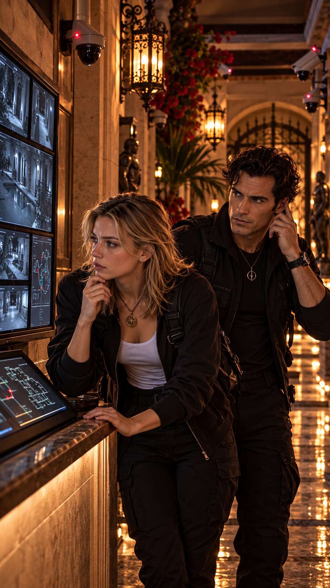
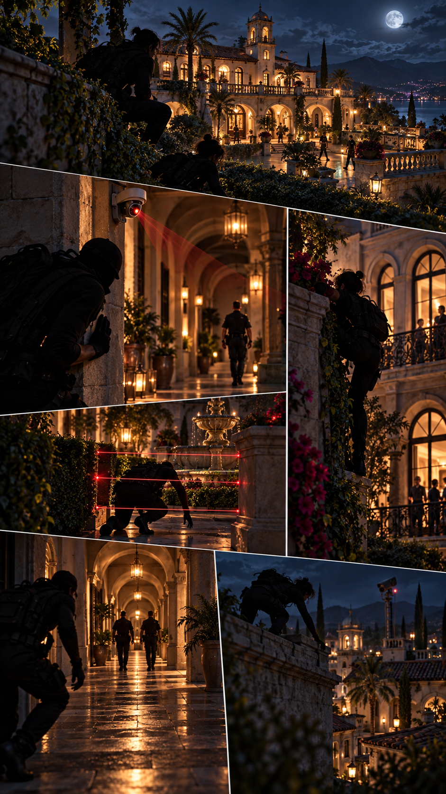
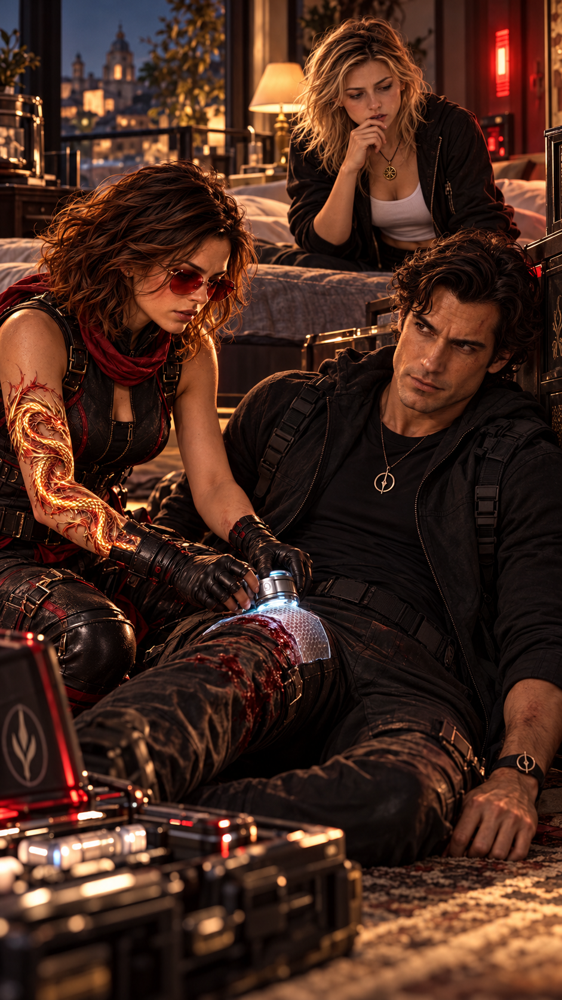
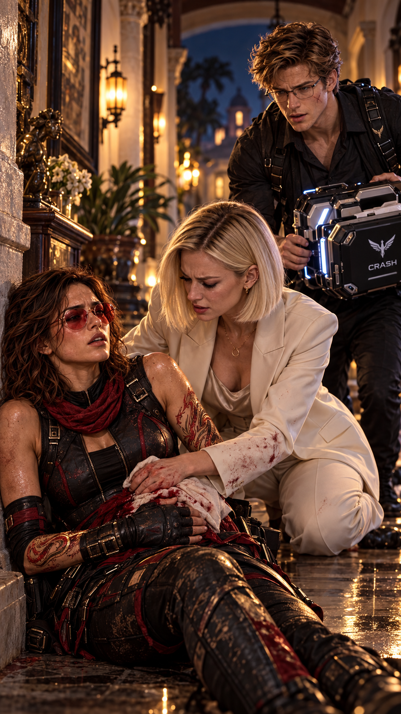
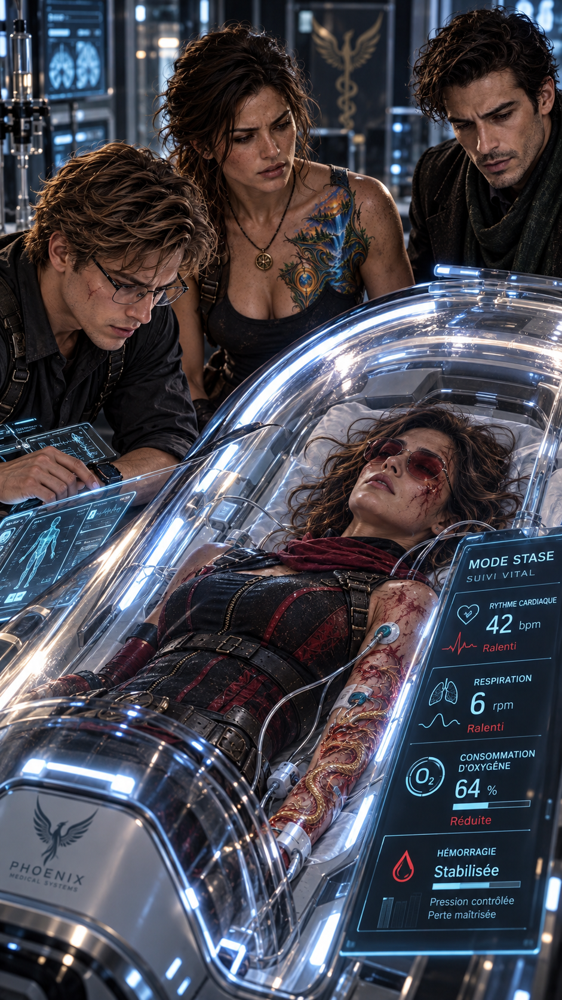
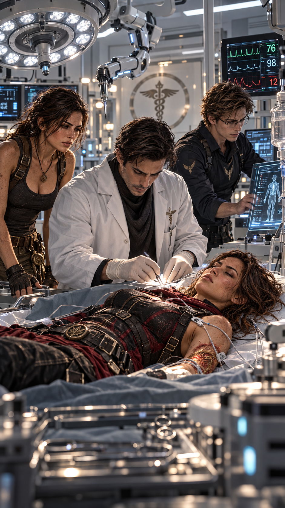
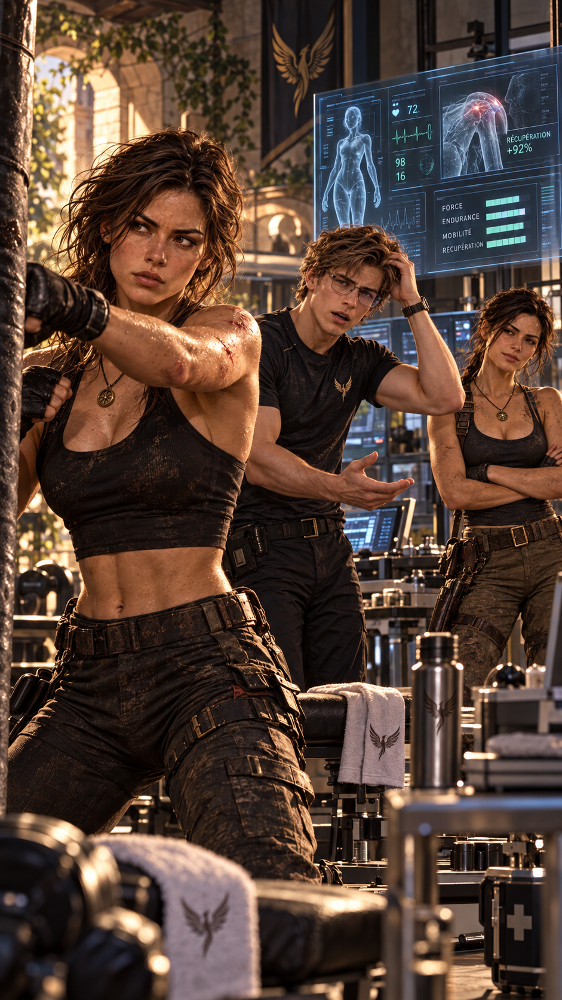
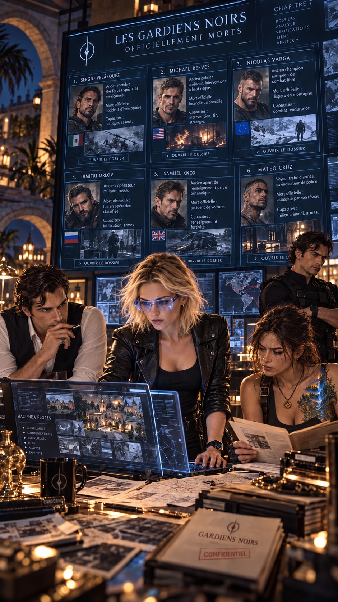
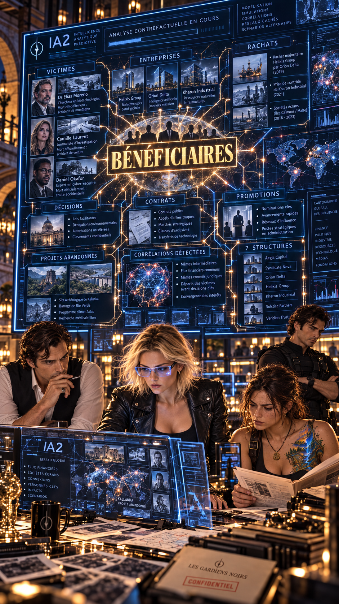

La nuit est calme à l’hacienda Flores.
Trop calme.
Hale accompagne Anna jusqu’à sa chambre.
Depuis la tentative d’enlèvement, les procédures de sécurité ont encore été renforcées.
Caméras.
Capteurs.
Patrouilles.
Contrôle biométrique.
Aucun accès ne devrait être possible sans autorisation.
En apparence, tout est sous contrôle.
Pourtant, quelque chose ne va pas.
Hale s’immobilise.
Anna le remarque immédiatement.
— Qu’est-ce qu’il y a ?
Il ne répond pas.
Sa main vient instinctivement se poser contre son oreille.
Aucun signal.
Puis une alerte silencieuse apparaît sur son dispositif personnel.
INTRUSION INTERNE
Hale se retourne brusquement.
— Anna, derrière moi.
— Hale…
— Maintenant.
Le ton ne permet aucune discussion.
À quelques kilomètres de là, Hope reçoit elle aussi une alerte.
Pas celle du système de sécurité de l’hacienda Flores.
Une autre.
Plus ancienne.
Réservée aux Sentinelles.
Le signal de Hale.
Hope ne perd pas une seconde.
Elle active son Airfly et quitte immédiatement l’hacienda Awake.

À l’intérieur de la propriété Flores, plusieurs silhouettes progressent avec une précision inquiétante.
Elles ne cherchent pas à éviter les systèmes de sécurité.
Elles savent déjà où ils sont.
Elles connaissent les angles morts.
Les procédures.
Les temps de rotation des équipes.
Hale comprend immédiatement.
Ce n’est pas une intrusion improvisée.
Quelqu’un leur a fourni les informations nécessaires.
Hale pousse Anna dans sa chambre et verrouille la porte.
— Reste ici.
— Et toi ?
— Je reste avec toi.
Une première détonation retentit dans le couloir.
Puis une seconde.
La porte blindée encaisse le choc.
Anna pâlit.
— Ils viennent pour moi ?
Hale ne répond pas.
À l’extérieur, Hope arrive au niveau de la propriété.
Elle n’essaie même pas d’entrer par les accès habituels.
L’Airfly la dépose à proximité de l’étage où se trouve la chambre d’Anna.
ACCÈS DIRECT
ÉTAGE CIBLE — LOCALISÉ
Hope contourne entièrement les accès habituels.
Hope rejoint rapidement une fenêtre.
À l’intérieur, Hale vient tout juste de repousser un premier assaillant.
Un second apparaît.
Puis un troisième.
Hope pénètre dans la pièce au moment précis où un tir part en direction d’Anna.
Elle dévie brutalement le bras de l’agresseur.
Le projectile frappe le mur.
— Hope !
— Plus tard.

Hope neutralise l’homme.
Hale affronte le second.
Mais une lame le frappe profondément au flanc.
Il s’effondre.
— Hale !
Anna veut courir vers lui.
Hope la retient.
— Non.
Elle s’accroupit immédiatement auprès de lui.
Un seul regard lui suffit pour comprendre la gravité de la blessure.
Hope sort sa capsule.
Hale secoue aussitôt la tête.
— Garde-la.
— Non.
— Hope, tu vas devoir continuer à te battre.
Elle le regarde droit dans les yeux.
— Et toi, tu vas devoir continuer à protéger Anna.
Hale comprend parfaitement ce qu’elle veut dire.
Il veille sur Anna depuis sa naissance.
Il connaît ses habitudes.
Ses réactions.
Son entourage.
Les équipes de sécurité.
Les procédures de l’hacienda Flores.
Et surtout, il pourrait être l’un des mieux placés pour découvrir une faille interne.
Hope active la capsule.
— Tu es beaucoup trop important pour elle pour que je prenne le risque de te perdre maintenant.
Elle ajoute :
— Et quand tout ça sera terminé, tu vas m’aider à comprendre comment ils sont entrés.
Hale acquiesce.
— Compris.
Hope applique la capsule contre sa blessure.
Une fine membrane se déploie autour de la plaie.
Le saignement commence progressivement à ralentir.
Hale serre les dents.
Hope observe quelques secondes les données.
— Ça ne te remettra pas sur pied comme si rien ne s’était passé.
Puis elle ajoute :
— Mais ça devrait te maintenir suffisamment opérationnel.
Hope se tourne vers Anna.
— Maintenant, toi.
Hope sort un autre dispositif.
— Qu’est-ce que c’est ?
— Une bulle Crash.
PROTECTION — DÉPLOYÉE
STRUCTURE — STABILISÉE
Anna est désormais protégée par une enveloppe transparente.
— Reste avec Hale.
Anna secoue la tête.
— Et toi ?
Hope regarde le couloir.
— Ta mère.
Anna comprend immédiatement.
— Hope…
— Je vais la chercher.
Elle disparaît avant qu’Anna ait le temps de protester.
Betty se trouve dans une autre partie de l’hacienda.
Elle comprend que quelque chose se passe lorsque l’éclairage de sécurité change brutalement.
— Anna ?
Elle attrape son téléphone.
Aucun réseau.
— Anna !
Betty quitte la pièce.
Une silhouette apparaît à l’extrémité du couloir.
Elle n’a pas le temps de comprendre.
Hope surgit.
Mais cette fois, quelque chose est différent.
Elle n’est plus aussi parfaitement concentrée qu’à son habitude.
L’attaque contre Anna.
Hale blessé.
Betty.
Deux personnes qu’elle commence à vouloir protéger d’une manière devenue beaucoup trop personnelle.
Hope sait exactement ce que cela signifie.
Une Sentinelle qui s’attache se découvre un talon d’Achille.
Hope agit trop vite.
Elle ne prend pas cette fraction de seconde qui lui permet normalement d’anticiper les mouvements.
Son attachement modifie sa manière de combattre.
Lorsqu’elle voit l’arme se lever en direction de Betty, elle ne réfléchit pas.
Elle agit.
Trop vite.
— Betty !
La détonation retentit.
Hope se jette contre elle et la pousse hors de la trajectoire.
Cette fois, elle ne parvient pas à éviter le projectile.

Betty tombe avec elle.
Elle entend le choc.
Puis sent quelque chose de chaud sur ses mains.
Du sang.
— Hope ?
Hope se redresse malgré tout.
Son flanc est couvert de sang.
— Reste derrière moi.
— Tu es blessée !
— Je sais.
BLESSURE — GRAVE
HÉMORRAGIE — IMPORTANTE
PRÉCISION — ENCORE ÉLEVÉE
ENDURANCE — EN BAISSE
Un nouvel assaillant apparaît.
Hope le neutralise.
Puis un autre.
Elle continue à se battre.
Mais elle ralentit.
Ses gestes restent précis.
Ses réactions efficaces.
Pourtant, sa respiration devient de plus en plus lourde.
Betty le remarque.
— Arrête !
Hope ne répond pas.
Un dernier homme attaque.
Hope l’esquive, le désarme et le met hors d’état de nuire.
Puis elle s’appuie brutalement contre le mur.
Betty se précipite vers elle.
— Assieds-toi.
— Anna ?
— Je n’en sais rien !
— Hale est avec elle.
Hope tente malgré tout d’avancer.
Ses jambes fléchissent.
Betty la rattrape.
— Cette fois, tu restes là.
Elle appuie immédiatement sur la blessure.
— Tu perds beaucoup trop de sang.
Hope ferme brièvement les yeux.
— J’ai connu mieux.
— Très drôle.
Betty retire sa veste et comprime davantage la plaie.
Peter arrive quelques minutes plus tard.
Il traverse l’hacienda accompagné de plusieurs dispositifs de sécurité.
Il trouve d’abord Anna.
La bulle Crash l’enveloppe toujours.
Hale est assis contre un mur, pâle mais conscient.
Toujours vigilant.
— Anna !
— Peter !
— Tu vas bien ?
— Oui. Hope est partie chercher Maman.
Peter regarde Hale.
— Et toi ?
Hale désigne la capsule appliquée contre son flanc.
— Elle m’a donné la sienne.
— Elle a fait quoi ?

Lorsqu’il finit par trouver Hope, Betty est agenouillée près d’elle.
Ses mains sont couvertes de sang.
Hope est presque inconsciente.
Peter s’arrête.
Betty relève immédiatement la tête.
— Peter !
Il s’approche.
— Depuis combien de temps ?
— Quelques minutes.
Betty le regarde, stupéfaite de le voir encore relativement calme.
— Tu comptes faire quelque chose ou la regarder mourir ?
Peter ne réagit pas à l’agressivité.
Il examine rapidement Hope.
— Hope a plus d’un tour dans son sac.
Hope entrouvre difficilement les yeux.
— Peter…
— Oui ?
— Je n’ai plus de capsule.
Le visage de Peter se décompose.
— Quoi ?
— Tu plaisantes ?
Hope ferme les yeux.
— Hale.
Peter comprend immédiatement.
— Tu veux mourir ou quoi ?
Betty regarde Peter.
— Elle a besoin d’une intervention chirurgicale immédiatement.
Peter secoue la tête.
— Pas ici.
Puis il se tourne vers Hope.
— Je vais te mettre en stase.
Hope acquiesce faiblement.
— Fais-le.
Elle ajoute :
— Et emmène-les avec nous.

Peter attrape le bras de Betty.
— Reculez.
— Certainement pas.
— Betty, maintenant !
Son ton est tellement inhabituel qu’elle obéit malgré elle.
Peter déploie une bulle Crash autour de Hope.
Mais cette fois, il active un mode différent.
RESPIRATION ↓
RYTHME CARDIAQUE ↓
CONSOMMATION D’OXYGÈNE ↓
CIRCULATION ↓
HÉMORRAGIE ↓
La structure se referme doucement autour de son corps.
Les paramètres vitaux apparaissent sur le bracelet de Peter.
— Mode stase.
La respiration de Hope ralentit.
Son rythme cardiaque également.
Betty se redresse brutalement.
— Qu’est-ce que tu lui fais ?
— Je ralentis son métabolisme.
— À ce niveau-là ?
Betty observe les données.
— Peter, elle va mourir !
— Non.
— Son rythme cardiaque s’effondre !
— C’est volontaire.
Betty tente de s’approcher.
Peter l’arrête.
— Ne touchez à rien.
— Je suis médecin et généticienne !
— Et moi, j’ai conçu le système qui la maintient actuellement en vie.
Un silence.
Peter lui montre les constantes.
— La stase ralentit la circulation, la consommation d’oxygène et l’hémorragie.
— Ça ne la soigne pas.
Betty se calme légèrement.
Elle comprend enfin.
— Ça nous donne du temps.
— Exactement.
Hope entrouvre une dernière fois les yeux.
— Peter…
— Je suis là.
— Appelle… l’Illuminé.
Puis sa tête retombe.
Betty se fige.
— L’Illuminé ?
Peter soupire.
Charles.
Betty le regarde.
— Charles Loutcho ?
— Oui.
— Comment connaît-elle Charles ?
— Pas maintenant.
Plus tard, Hale explique ce qui s’est passé.
Peter comprend peu à peu la véritable logique de la décision de Hope.
Hale connaît Anna depuis sa naissance.
↓
Il connaît l’hacienda Flores.
↓
Il connaît les procédures et les équipes.
↓
Il peut repérer une faille interne.
↓
Maintenir Hale opérationnel, c’était continuer à protéger Anna.
Une fois dans la Jeep, Peter contacte Root.
Elle répond immédiatement.
— Peter ?
Le simple silence qui suit suffit à lui faire comprendre.
— Elle va mal.
Ce n’est pas une question.
— Oui.
Root ferme les yeux à l’autre bout de la communication.
— Je le savais.
Peter regarde Hope.
— Elle a pris une balle destinée à Betty.
Root ne répond pas.
Peter poursuit :
— Elle a donné sa capsule à Hale.
— Quoi ?
— Exactement ma réaction.
Root respire profondément.
— Pourquoi elle a fait ça ?
Peter regarde brièvement Hale dans le rétroviseur.
Puis Anna.
Quelque chose commence à s’emboîter.
— Demande-lui quand elle se réveillera.
Il ajoute :
— Mais je crois que je commence à comprendre.
Peter reprend :
— Prépare la chambre blanche.
— C’est déjà fait.
— Charles Loutcho nous rejoint.
Root se fige.
— L’Illuminé ?
Betty intervient depuis le véhicule.
— Oui.
Peter poursuit :
— Betty vient de l’appeler.
— Combien de temps avant votre arrivée ?
Peter regarde la route.
— Moins de cinq minutes.
— Et Charles ?
Betty répond :
— Il arrive aussi vite qu’il peut.
Root prend une inspiration.
Peter entend néanmoins l’inquiétude dans sa voix.
— Root.
— Oui ?
— Elle va s’en sortir.
Un silence.
— Je sais.
Mais sa voix dit exactement le contraire.
La Jeep franchit les grilles de l’hacienda Awake à vive allure.
Root les attend déjà.
Charles Loutcho apparaît derrière elle.
Il porte déjà une tenue médicale.
Root les mène jusqu’à un accès dissimulé au sous-sol.
Une porte s’ouvre.
Puis une deuxième.
Puis une troisième.
La chambre blanche.
Charles aperçoit Hope.
Son expression change.
— C’est elle ?
Peter acquiesce.
— Plaie par balle. Hémorragie importante. Stase active depuis quelques minutes.
Charles s’approche immédiatement.
— Où est l’impact ?
Peter lui montre les données.
— Flanc gauche.
— Sortie ?
— Non.
Charles grimace.
— Donc balle toujours à l’intérieur.
L’intervention commence.
Pendant près d’une heure, Charles travaille sans presque prononcer un mot.
La balle est localisée.
Extraite.
L’hémorragie contrôlée.
Les tissus endommagés sont réparés autant que possible.
Enfin, Charles recule.
— Voilà.
Peter regarde les constantes.
— Stable.

Charles enlève ses gants.
— Maintenant, c’est à vous.
Il désigne les capsules.
— Je veux voir ce que ces fameuses merveilles sont réellement capables de faire.
Peter prend plusieurs petites capsules translucides.
Peter applique la première capsule.
Une fine membrane se développe sur la plaie.
Puis la seconde.
Les écrans commencent progressivement à afficher des modifications.
Charles se rapproche.
— Attends…
Il observe les paramètres.
— Ça augmente réellement l’activité réparatrice.
Peter acquiesce.
Charles regarde encore.
— Sans prolifération anarchique ?
— C’est justement tout l’intérêt.
Charles se tourne vers lui.
— Peter…
— Oui ?
— Si ce que je vois fonctionne de manière reproductible…
Il se retourne vers Hope.
— Tu te rends compte de ce que ça représente pour la médecine ?
Traumatologie.
Chirurgie.
Brûlures.
Certaines lésions musculaires.
Peut-être même certains dommages neurologiques selon les molécules impliquées.
Hypothèses à confirmer.
Pendant ce temps, à l’étage, Anna refuse de s’éloigner de la porte menant au sous-sol.
Betty est assise près d’elle.
Hale reste debout.
Ce détail finit par attirer l’attention de Betty.
Elle regarde son flanc.
— Hale.
— Oui ?
— Il y a moins de deux heures, vous aviez une plaie profonde à cet endroit.
— Exact.
— Et vous êtes debout.
TEMPS ÉCOULÉ — MOINS DE 2 HEURES
ASPECT DE LA PLAIE — CICATRISATION DE PLUSIEURS JOURS
Ce n’est pas une guérison instantanée. C’est une accélération biologique exceptionnellement forte.
Quelques minutes plus tard, un véhicule arrive.
Lucy descend la première.
Clive apparaît de l’autre côté.
Lucy aperçoit immédiatement Anna.
— Ça va ?
Anna se jette dans ses bras.
— Oui.
Lucy la serre contre elle.
Puis regarde Betty.
— Et Hope ?
— En chirurgie.
Le visage de Lucy se ferme.
— Grave ?
Betty acquiesce.
Presque deux heures plus tard, Root remonte enfin.
Anna se lève immédiatement.
— Alors ?
Root sourit.
— Elle est stable.
Le soulagement est immédiat.
Betty ferme les yeux.
Anna inspire profondément.
Lucy demande :
— Et ?
— Charles a retiré la balle.
Root poursuit :
— Peter a utilisé plusieurs capsules.
Pour l’instant, son organisme réagit très bien.
Anna regarde Root.
— Elle va s’en sortir ?
Root s’approche d’elle.
— Oui.
— Elle va s’en sortir.
Hope dort.
Elle est extrêmement pâle.
Mais ses constantes sont désormais régulières.
Betty reste quelques instants près d’elle.
Puis Charles entre.
— Elle est impressionnante.
Betty regarde Hope.
— Tu parles de la patiente ou de sa capacité de récupération ?
— Les deux.
Il s’approche.
— Betty, nous allons devoir parler.
— De Hope ?
— Des capsules.
Charles poursuit :
— Elles ne guérissent pas miraculeusement.
— Heureusement.
— Mais elles accélèrent certains processus biologiques d’une manière que je n’ai jamais observée.
Charles réfléchit.
— Et surtout, elles semblent savoir où agir.
Betty fronce les sourcils.
— « Savoir » ?
— Mauvais mot.
— Mais tu comprends ce que je veux dire.
Il regarde Hope.
— Il y a une sélectivité impressionnante.
— Pas de croissance incontrôlée.
— Pas de réaction inflammatoire disproportionnée.
— Pas de destruction visible des tissus sains.
Betty devient silencieuse.
Charles sourit.
— Tu veux déjà les analyser.
— Évidemment.
— Moi aussi.
Il devient sérieux.
— Mais avant de vouloir sauver le monde avec, découvrons d’abord ce qu’elles contiennent et quels sont leurs risques.
Lucy finit par entrer.
— Betty.
Elle lui fait signe.
— Il faut rentrer.
Betty regarde Hope une dernière fois.
Puis acquiesce.
Anna vient également lui dire au revoir.
Elle s’approche du lit.
— Tu as intérêt à te réveiller rapidement.
Hope ne bouge pas.
Puis elle ouvre les yeux et lui sourit.
Anna sourit, surprise et heureuse.
— Parce que je n’ai pas fini de t’embêter.
Root, derrière elle, murmure :
— Ça devrait fonctionner.

Peter regarde l’écran devant lui.
Puis Hope.
Puis l’écran.
Puis encore Hope.
— Non.
Hope continue ses mouvements.
— Si.
— Non.
Elle frappe dans le sac d’entraînement.
— Tu as été opérée il y a sept jours.
— Je sais compter.
— Apparemment pas mesurer ton propre niveau de stupidité.
Root entre dans la salle.
— Je vois que tout est revenu à la normale.
PLAIE — REFERMÉE
TISSUS — PRESQUE CICATRISÉS
ENTRAÎNEMENT — REPRIS
Une récupération humaine ordinaire aurait nécessité plusieurs semaines.
Hope sourit.
— Je vais parfaitement bien.
Peter soupire.
— C’est justement ça qui m’inquiète.
Il regarde les données.
La récupération est spectaculaire.
La plaie est refermée.
Les tissus ont presque entièrement cicatrisé.
Une personne ordinaire aurait encore besoin de plusieurs semaines.
Hope, elle, a déjà repris un entraînement contrôlé.
Root croise les bras.
— Doucement quand même.
Hope s’arrête.
— Vous êtes tous devenus insupportables.
Peter répond :
— On t’aime aussi.
Hope le regarde.
Peter réalise ce qu’il vient de dire.
Un silence.
Root sourit.
— Intéressant.
— Tais-toi.
Hope reprend son entraînement.
Mais elle sourit.

Pendant que Hope récupère, une autre enquête progresse.
Lucy a transformé une pièce de l’hacienda Flores en véritable centre d’analyse.
Sur les murs apparaissent photographies, cartes, noms et chronologies.
Root est assise devant plusieurs dossiers.
Clive fait tourner un stylo entre ses doigts.
Hale, encore légèrement raide lorsqu’il bouge trop rapidement, les rejoint régulièrement avec les résultats de son enquête interne.
Lucy regarde l’écran principal.
— On reprend depuis le début.
IA2 affiche six portraits.
Les hommes ayant attaqué Hope, Root, Lucy et Clive quelques jours auparavant.
Tous officiellement morts.
Clive regarde les six hommes.
— Donc les Gardiens recrutent partout.
Root acquiesce.
— Militaires.
— Policiers.
— Sportifs.
— Agents clandestins.
— Criminels.
Lucy poursuit :
— Le profil social ne compte pas.
Root termine :
— Seulement les capacités.
Lucy regarde les six photos.
— Et leur capacité à disparaître.
Clive sourit.
— Il faut reconnaître qu’être mort facilite considérablement certaines activités illégales.
Lucy lui lance un regard.
— Merci pour cette analyse brillante.
— À votre service.
Lucy change l’écran.
Cette fois, ce sont les victimes de la Caméléon qui apparaissent.
— Maintenant, la vraie question.
Root se rapproche.
Lucy poursuit :
— Nous avons cherché ce que toutes ces personnes avaient fait avant leur mort.
Elle marque une pause.
— Mais Hope nous a demandé autre chose.
QUE SE SERAIT-IL PASSÉ SI ELLES AVAIENT VÉCU ?
Root regarde les trois victimes affichées.
— Attendez.
Elle se lève.
— Moreno aurait modifié l’accès aux greffes.
— Laurent aurait changé un équilibre industriel.
— Okafor allait déclencher une procédure susceptible de toucher plusieurs multinationales.
Lucy acquiesce.
— Aucun d’eux n’était une personnalité mondiale.
— Mais tous étaient sur le point de provoquer quelque chose.
Root sourit légèrement.
— L’effet papillon.
Lucy lève immédiatement un doigt.
— Ne commence pas.
Clive rit.
— Elle l’attendait depuis une semaine.
Root poursuit malgré tout.
— Ce ne sont pas les victimes qui sont importantes.
Elle désigne l’écran.
— Ce sont les futurs qui ont disparu avec elles.
Lucy regarde les dossiers.
Cette phrase la frappe.
Elle se tourne vers IA2.
— Analyse toutes les victimes selon ce principe.
— Pas ce qu’elles avaient accompli.
— Ce qu’elles auraient probablement fait dans les semaines, les mois ou les années suivant leur mort.
ANALYSE CONTREFACTUELLE EN COURS…
Décisions.
Rencontres.
Projets.
Successeurs.
Rachats.
Contrats.
Décisions politiques.
BÉNÉFICIAIRES
Les données commencent à défiler.
Quelques secondes plus tard, plusieurs lignes apparaissent.
Lucy se rapproche.
— Qu’est-ce que…
Root se lève.
Sur l’écran, IA2 vient de faire apparaître plusieurs connexions.
Entre les entreprises.
Les successeurs.
Les rachats.
Les décisions politiques prises après certains décès.
Les contrats attribués.
Les personnes promues.
Les projets abandonnés.
Puis un mot apparaît au centre.
BÉNÉFICIAIRES.
Clive ne sourit plus.
— Intéressant.
Lucy regarde les ramifications.
— IA2.
— Compare les bénéficiaires indirects de toutes les morts.
Quelques secondes passent.
CORRÉLATIONS DÉTECTÉES.
Root s’approche encore.
— Combien ?
7 STRUCTURES
apparaissent dans plusieurs chaînes de conséquences.
Lucy regarde Root.
Root regarde Lucy.
Clive repose son stylo.
— Je crois qu’on vient enfin de trouver quelque chose.
Lucy fixe les sept noms affichés.
— Non.
Elle secoue légèrement la tête.
— On vient de trouver l’endroit où commencer à chercher.
Root sourit.
— Nuance de flic.
— Nuance essentielle.
Lucy regarde de nouveau l’écran.
Les morts administratifs.
Les victimes de la Caméléon.
Les futurs supprimés.
Les bénéficiaires.
Pour la première fois depuis le début de son enquête, elle ne voyait plus une succession de cadavres.
Elle voyait une architecture.
Et quelque part derrière cette architecture…
quelqu’un construisait quelque chose.